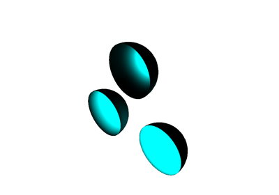

Lighting#
These examples demonstrate how to take fine-tuned control over lighting conditions in a scene. Explore them to learn how to go beyond the default lighting setup to truly bring out the best of your visualization:
Choose between preset lighting systems for plotters
Disable lighting on the mesh level
Learn about the different light types
Customize the shape of positional lights
Use actors to visualize the beams of spotlights

Attenuation

Beam Shape


Plotter Lighting Systems